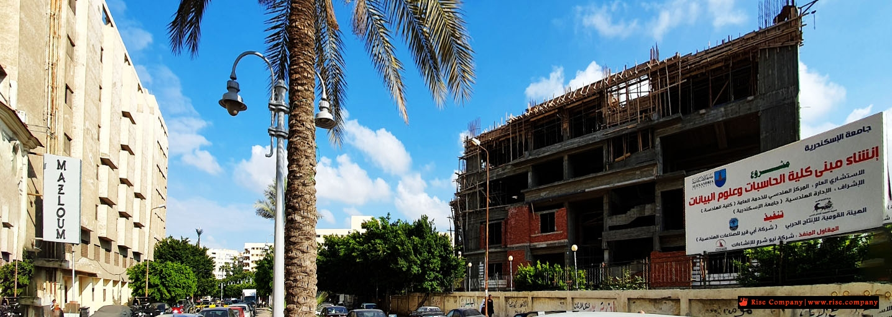

Welcome to Fcds Portal
كلمة العميد
القرن الحادى والعشرين هو قرن البيانات في ظل ثورة التكنولوجيا والاتصالات، فقامت جامعة الاسكندرية بانشاء كلية الحاسبات وعلوم البيانات لتكون قاطرة التقدم على خطوط سكة التكنولوجيا لتجوب الكوكب في لحظات عن طريق تخريج كوادر قادرة على صنع ومسايرة هذا التطور الهائل في جميع مجالات علوم البيانات من البيانات الصحية الى بيانات إدارة الاعمال والتجارة الاليكترونية ومن النظم الذكية الى امن كل نظم البيانات الى أنظمة الوسائط بكل اشكالها واستخداماتها. كلية الحاسبات وعلوم البيانات هي احد اهم دعامات بناء الدولة وتحقيق التنمية المستدامة عن طريق الاهتمام بمجالات علوم البيانات والذكاء الاصطناعى والبحث العلمى المتميز بهم حيث تمتلك كلية الحاسبات وعلوم البيانات جامعة الإسكندرية مجموعة من البرامج المتميزة في التخصصات التكنولوجية التي لا يوجد بديل لها في جميع الجامعات ومع تطوير برامج الكلية بالتخطيط الاستراتيجي سوف نحقق افضل النتائج وتزويد المجتمع المحلى والدولى بالخريجين الأكفاء في كل المجالات التكنولوجية والله ولي التوفيق . 